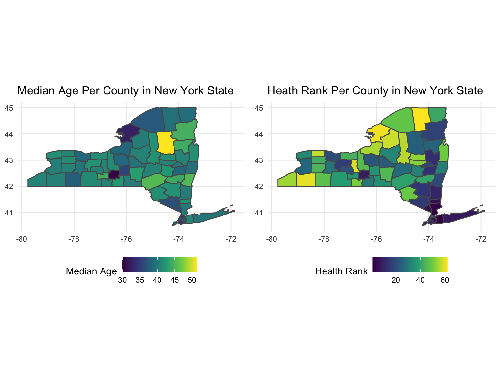
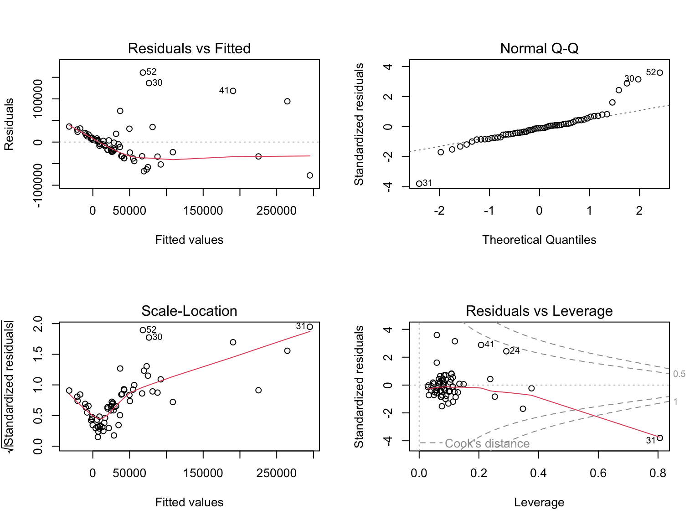
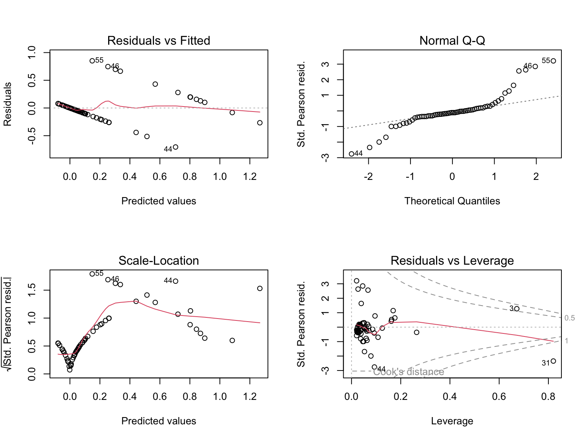
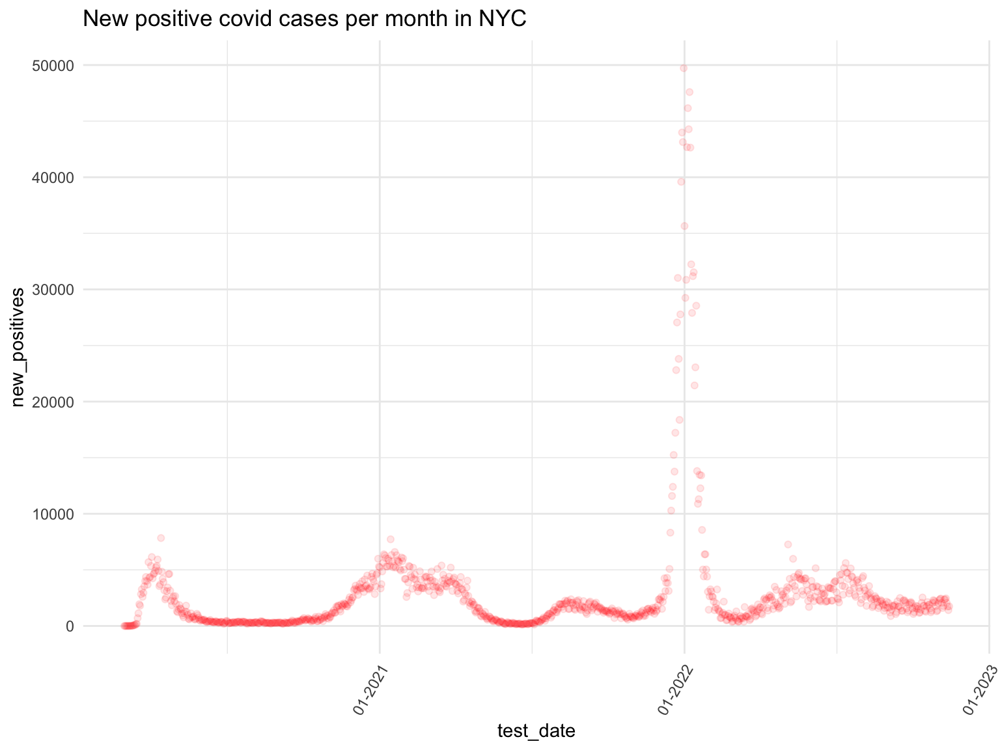

Final Report
Motivation
In 2020, the world entered into a pandemic and now two years later as we recover and try to move on with life, things are different. The pandemic brought with it a new lens that showed disparities based on SES, geographical location, etc. that always existed but were never taken seriously. Research has shown that people of color and those from a low SES are at higher risk to contracting COVID-19; as such, public health professionals should be aware of such gaps and make it an effort to especially focus on these groups at higher risk (Khanijahani et al., 2021).
Analysis and Relevance:
Our project looks at the change in COVID-19 trends in New York State for each county, specifically how COVID-19 is spatially autocorrelated across the different counties and the extent auto-correlation within New York City, the most populated county. We also looked at whether health behaviors and socioeconomic (SES) factors are associated with this change in trends by county. These analyses can be helpful to public health officials in the following ways:
First, understanding the spatial patterns of COVID-19 trends can help public health officials to identify areas that are at higher risk for the spread of the virus. This information can be used to target interventions and resources to these areas in order to reduce the spread of COVID-19 and protect the health of the population.
Second, examining the relationship between health behaviors and SES factors and the change in COVID-19 trend can help public health officials to identify potential risk factors for the spread of the virus. This information can be used to develop targeted interventions and policies that aim to reduce the risk of COVID-19 transmission by addressing these factors.
Overall, studying the change in COVID-19 trend in New York State for each county, and examining spatial autocorrelation and the relationship with health behaviors and SES factors, can provide valuable insights. These discoveries can help public health officials to better understand the spread of COVID-19 and take effective action to reduce the risk of transmission in communities at higher risk and address presisting health disparities.
Data Processing and Cleaning
Data Sources
Our data were downloaded from four different sources:
New York State Demographics: US Census Bureau’s demographics data were imported using
tidycensus.New York State, County Land Area (dataset) A .csv file was created based on the information provided in the website.
Note: unable to be loaded usingread_htmlas this is an xml document.New York State Health Ranking (dataset): Four data sets (2019, 2020, 2021 and 2022 New York State Health Ranking Data) were downloaded as .xls/xlsx. These data sets are provided by the University of Wisconsin Population Health Institute, which performs extensive analyses to calculate each New York county’s score for health factors (health behaviors, clinical care, SES factors, and physical environment) and health outcome (quality of life, and length of life).
New York State COVID-19 (dataset): Three data sets (COVID testing, COVID vaccination, COVID fatalities from 2020 to 11/2022) were downloaded as .csv.
Data Cleaning
- New York State Demographics
We imported US Census Bureau’s 2020 data because 2021 data are not available until 12/8/2022. As demographics data do not change significantly each year, 2020 data were used for analysis. Then we decided to include the following variables, as we would like to adjust them in our models:
- total population in each county (tpop)
- median age in each county (medage)
- racial diversity index (race_div): calculated Simpson’s Diversity Index in lines 65 to 69 (higher index indicates more racial diversity)
census_api_key("aa512886c5449a582d837da8d3a07af66a043fe5")
census_data <- load_variables(2020, "acs5", cache=T)
fwrite(census_data, "census_variables.csv")
vars <- c(tpop = 'P001001',
medage = 'P013001',
wpop = 'P003002',
bpop = 'P003003',
apop = 'P003005',
hpop = 'P004003')
nys_df <- get_decennial(state = "ny",
geography = "county",
variables = vars,
geometry = T,
output = "wide")
NY_df <- get_decennial(state = "ny",
geography = "county",
variables = vars,
geometry = T,
output = "wide")
NY_df = NY_df %>%
mutate(
county = gsub(" County, New York","",NAME))
nys_df = nys_df %>%
mutate(
county = gsub(" County, New York","",NAME))
nys_df$race_div <- 1 - (((nys_df$wpop*(nys_df$wpop-1))+
(nys_df$bpop*(nys_df$bpop-1))+
(nys_df$hpop*(nys_df$hpop-1))+
(nys_df$apop*(nys_df$apop-1)))/
(nys_df$tpop*(nys_df$tpop-1)))
nys_df = nys_df %>%
select(tpop, medage, county, race_div)- New York State, County Land Area After loading the dataset, which only contains two variables–county and value (provides area of each county as square mile; this variable was renamed as “area”)–the dataset was merged with nys_df to calculate population density for each county. The population density variable was created so we can adjust for it in our regression models, especially ones that involve number of COVID-19 cases and fatalities.
area = read_excel('data/pop_density.xlsx') %>%
janitor::clean_names() %>%
rename(area = value)
nys_df = left_join(nys_df, area, by = 'county') %>%
mutate(pop_d = tpop/area)- New York State Health Ranking
Same steps were taken for each year: As the original excel files contain multiple sheets. We only imported the sheets that contain variables of interest.
Each county’s health ranking was imported from the sheet named “Outcomes & Factors SubRankings.” From the sheet, only the following variables were selected for future analysis: each county’s rank for health outcomes (quality of life, renamed to qol_r; length of life, renamed to longevity_r), health factors (health behaviors, renamed to health_beh_r; clinical_care, renamed to clinical_care_r; socioeconomic factors, renamed to ses_r; physical environment, renamed to env_r).
Additionally, further information on each county’s socioeconomic factors and race/ethnicity were imported from the sheet named “Additional Measure Data.” The following variables were selected: each county’s segregation index (white vs. nonwhite), renamed to segregation_score; median household income, renamed household_income; % Hispanic, p_hispanic; % black, renamed p_black). As we are interested in observing racial and socioeconomic disparities in COVID, we then created the following variables: % minority (hispanic + black), named p_minority; binary variable for low vs. moderate/high level of segregation. The cutoff value for level of segregation was set as 30. (source)
# 2019 HR Data
hr2019 = read_excel('data/ny_hr19.xls', sheet = 'Outcomes & Factors SubRankings', skip = 1) %>%
janitor::clean_names() %>%
slice(-c(1)) %>%
select(-starts_with("z"), -fips, -state) %>%
rename(longevity_r = rank_5,
qol_r = rank_7,
health_beh_r = rank_9,
clinical_care_r = rank_11,
ses_r = rank_13,
env_r = rank_15)
demo2019 = read_excel('data/ny_hr19.xls', sheet = 'Additional Measure Data', skip = 1) %>%
janitor::clean_names() %>%
slice(-c(1)) %>%
select('county',
'segregation_index_2',
'household_income',
'percent_hispanic',
'percent_african_american') %>%
rename(median_income = household_income,
segregation_score = segregation_index_2,
p_hispanic = percent_hispanic,
p_black = percent_african_american) %>%
mutate(segregation = case_when(segregation_score < 30 ~ 0,
segregation_score >= 30 ~ 1),
p_minority = p_black + p_hispanic)
total2019 = merge(x = hr2019, y = demo2019, by = "county", all.x = TRUE) %>%
mutate(year = 2019)
# 2020 HR Data
hr2020 = read_excel('data/ny_hr20.xlsx', sheet = 'Outcomes & Factors SubRankings', skip = 1) %>%
janitor::clean_names() %>%
slice(-c(1)) %>%
select(-starts_with("z"), -fips, -state) %>%
rename(longevity_r = rank_5,
qol_r = rank_7,
health_beh_r = rank_9,
clinical_care_r = rank_11,
ses_r = rank_13,
env_r = rank_15)
demo2020 = read_excel('data/ny_hr20.xlsx', sheet = 'Additional Measure Data', skip = 1) %>%
janitor::clean_names() %>%
slice(-c(1)) %>%
select('county',
'median_household_income',
'segregation_index_2',
'percent_black',
'percent_hispanic') %>%
rename(median_income = median_household_income,
segregation_score = segregation_index_2,
p_black = percent_black,
p_hispanic = percent_hispanic) %>%
mutate(segregation = case_when(segregation_score < 30 ~ 0,
segregation_score >= 30 ~ 1),
p_minority = p_black + p_hispanic)
total2020 = merge(x = hr2020, y = demo2020, by = "county", all.x = TRUE) %>%
mutate(year = 2020)
# 2021 HR Data
hr2021 = read_excel('data/ny_hr21.xlsx', sheet = 'Outcomes & Factors SubRankings', skip = 1) %>%
janitor::clean_names() %>%
slice(-c(1)) %>%
select(-starts_with("z"), -fips, -state) %>%
rename(longevity_r = rank_5,
qol_r = rank_7,
health_beh_r = rank_9,
clinical_care_r = rank_11,
ses_r = rank_13,
env_r = rank_15)
demo2021 = read_excel('data/ny_hr21.xlsx', sheet = 'Additional Measure Data', skip = 1) %>%
janitor::clean_names() %>%
slice(-c(1)) %>%
select('county',
'median_household_income',
'segregation_index_2',
'percent_black',
'percent_hispanic') %>%
rename(median_income = median_household_income,
segregation_score = segregation_index_2,
p_black = percent_black,
p_hispanic = percent_hispanic) %>%
mutate(segregation = case_when(segregation_score < 30 ~ 0,
segregation_score >= 30 ~ 1),
p_minority = p_black + p_hispanic)
total2021 = merge(x = hr2021, y = demo2021, by = "county", all.x = TRUE) %>%
mutate(year = 2021)
# 2022 HR Data
hr2022 = read_excel('data/ny_hr22.xlsx', sheet = 'Outcomes & Factors SubRankings', skip = 1) %>%
janitor::clean_names() %>%
slice(-c(1)) %>%
select(-starts_with("z"), -fips, -state) %>%
rename(longevity_r = rank_5,
qol_r = rank_7,
health_beh_r = rank_9,
clinical_care_r = rank_11,
ses_r = rank_13,
env_r = rank_15)
demo2022 = read_excel('data/ny_hr22.xlsx', sheet = 'Additional Measure Data', skip = 1) %>%
janitor::clean_names() %>%
slice(-c(1)) %>%
select('county',
'median_household_income',
'segregation_index',
'percent_black',
'percent_hispanic') %>%
rename(median_income = median_household_income,
segregation_score = segregation_index,
p_black = percent_black,
p_hispanic = percent_hispanic) %>%
mutate(segregation = case_when(segregation_score < 30 ~ 0,
segregation_score >= 30 ~ 1),
p_minority = p_hispanic + p_black)
total2022 = merge(x = hr2022, y = demo2022, by = "county", all.x = TRUE) %>%
mutate(year = 2022)
# Merge
hr_all = rbind(total2019, total2020, total2021, total2022)- New York State COVID-19
From the three data sets we extracted the following variables of interest: number of new COVID cases per day, cumulative number of deaths reported per day, cumulative # of individuals who received the first dose of the vaccine. For the data set with cumulative number of deaths, the county “Manhattan” was replaced with “New York” for consistency. Next, the three data sets were merged by “date” and “county.” The merged data set was then grouped according to “county” and “year” and the following variables were created: total number of new positive cases per year, called n_cases; total number of deaths per year, called n_deaths; and total number of individuals who received the first dose of the vaccine per year, called vax_dose1 (this data is not available for year 2020).
ny_test = read_csv('data/ny_covidtest.csv') %>%
janitor::clean_names() %>%
filter(geography == 'COUNTY') %>%
select(-geography) %>%
rename(date = test_date) %>%
mutate(date = lubridate::mdy(date))
ny_death = read_csv("data/ny_coviddeaths.csv") %>%
janitor::clean_names() %>%
rename(date = report_date, n_fatality = place_of_fatality) %>%
select(-deaths_by_county_of_residence) %>%
mutate(date = lubridate::mdy(date), county = replace(county, county == 'Manhattan', 'New York'))
ny_vax = read_csv("data/ny_covidvax.csv") %>%
janitor::clean_names() %>%
rename(date = report_as_of) %>%
select(-region, -series_complete) %>%
mutate(date = lubridate::mdy(date))
ny_covid_v1 = left_join(ny_test, ny_death, by = c("date", "county"))
covid_df_v1 = left_join(ny_covid_v1, ny_vax, by = c("date", "county")) %>%
separate(date, c("year", "month", "day"), sep = "-") %>%
mutate(year = as.numeric(year), month = as.numeric(month), day = as.numeric(day))
covid_df = covid_df_v1 %>%
group_by(year, county) %>%
summarise(n_cases = sum(new_positives),
vax_dose1 = max(first_dose),
n_deaths = max(n_fatality, na.rm = TRUE))- Dataset for Analysis
For regression tests, demographics dataset, HR dataset, and COVID dataset were merged into one dataset called “comb.” At the end, we added a new binary variable called vax_maj to see whether majority of the residents in the county had received the first dose of vaccine. The cutoff value used was 79% as it was reported that nearly ~79% of the US population had completed at least one dose of vaccine by the end of 2022. (source)
covid_hr = left_join(covid_df, hr_all, by = c("county", "year"))
comb = left_join(covid_hr, nys_df, by = 'county') %>%
mutate(tpop_50 = tpop/2,
vax_maj = case_when(vax_dose1 >= .83*(tpop) ~ 1,
vax_dose1 < .83*(tpop) ~ 0))- Bubble Plot We were interested in seeing whether there is a correlation between SES factors ranking and health behaviors and how it varies by the total number of residents in each county.
bubble_df = comb %>%
select(year, county, health_beh_r, ses_r, tpop) %>%
filter(year == '2021')Exploratory Data Analysis
In order to have a better understanding of the existing socioeconomic and health factor status of the counties we conducted some exploratory data analysis mainly through visualization. We first tried to see which counties have the highest socio-economic and heath factor scores
library(plotly)
data = bubble_df %>%
mutate(county = as.factor(county),
health_beh_r = as.numeric(health_beh_r),
ses_r = as.numeric(ses_r)) %>%
janitor::clean_names()
total <- merge(bubble_df,NY_df,by="county")
fig <- plot_ly(total, x = ~health_beh_r, y = ~ses_r, text = ~county, type = 'scatter',
mode = 'markers', size = ~tpop.y, color = ~county, colors = 'Paired',
marker = list(opacity = 0.5, sizemode = 'diameter'))
fig <- fig %>% layout(title = 'health-socio',
xaxis = list(showgrid = FALSE),
yaxis = list(showgrid = FALSE),
showlegend = FALSE)
figwrite.csv(total,"./data/eda_bubble.csv")From the plot we can see that New York, Queens and Kings have the highest socio economic score, but have the lowest health factors ranks. The size of the bubble signifies total population of the county. Nassau, Suffolk, Westcher have low health and socio-ecnomic scores.
Below is a colorpleth map to good understanding on the above in a spatial context,:
#library(sf)
#total = st_as_sf(total)
p = list()
p[[1]] = total %>%
ggplot() +
geom_sf(aes(fill = medage, geometry = geometry)) +
scale_fill_viridis_c(option = "viridis")
p[[2]] = total %>%
ggplot() +
geom_sf(aes(fill = health_beh_r, geometry = geometry)) +
scale_fill_viridis_c(option = "viridis")
grid.arrange(p[[1]], p[[2]], nrow = 1)
On the left we can see a chloropleth mao of medage per county in new york on the right is a chloropleth map of health factor rank per county.
ny_vax =
read_csv("./data/ny_covidvax.csv") %>%
janitor::clean_names() %>%
select(-region, -series_complete) %>%
rename(date = report_as_of) %>%
mutate(date = lubridate::mdy(date))## Rows: 43462 Columns: 5
## ── Column specification ────────────────────────────────────────────────────────
## Delimiter: ","
## chr (3): Region, County, Report as of
## dbl (2): First Dose, Series Complete
##
## ℹ Use `spec()` to retrieve the full column specification for this data.
## ℹ Specify the column types or set `show_col_types = FALSE` to quiet this message.vax_plotly =
ny_vax %>%
filter(date == "2022-11-14") %>%
mutate(county = fct_reorder(county, first_dose, .desc = TRUE)) %>%
mutate(text_label = str_c("County: ", county, "\nVaccinations: ", first_dose)) %>%
plot_ly(x = ~county,
y = ~first_dose,
type = "bar",
text = ~text_label) |>
layout(xaxis = list(title = "County in New York State"),
yaxis = list(title = "Cumulative Number of People with at least one dose"),
title = "Cumulative people with at least one dose of any COVID-19 vaccine by county by 11/14/2022")
vax_plotlyFrom the plot created of the cumulative distribution of people who have at-least the first dose of any COVID-19 vaccine by 11/14/2022, the highest ranking counties are all located in three major regions of New York State: New York City, Long Island, and Hudson Valley. Erie and Monroe counties also have high counts and they are from Western NY and Finger Lakes. This is expected as these are some of the most populous counties in New York State.
ny_death =
read_csv("./data/ny_coviddeaths.csv") %>%
janitor::clean_names() %>%
rename(date = report_date, n_fatality = place_of_fatality) %>%
mutate(date = lubridate::mdy(date)) %>%
select(-deaths_by_county_of_residence) %>%
filter(county != "Statewide Total")## Rows: 57728 Columns: 4
## ── Column specification ────────────────────────────────────────────────────────
## Delimiter: ","
## chr (2): Report Date, County
## dbl (2): Place of Fatality, Deaths by County of Residence
##
## ℹ Use `spec()` to retrieve the full column specification for this data.
## ℹ Specify the column types or set `show_col_types = FALSE` to quiet this message.deaths_plotly =
ny_death %>%
filter(date == "2022-11-14") %>%
mutate(county = fct_reorder(county, n_fatality, .desc = TRUE)) %>%
mutate(text_label = str_c("County: ", county, "\nDeaths: ", n_fatality)) %>%
plot_ly(x = ~county,
y = ~n_fatality,
type = "bar",
text = ~text_label) |>
layout(xaxis = list(title = "County in New York State"),
yaxis = list(title = "Cumulative Number of Fatalities"),
title = "Cumulative COVID-19 deaths by county by 11/14/2022")
deaths_plotlyFrom the plot created of the cumulative distribution of people who have died from COVID-19 by 11/14/2022, the highest ranking counties are also all located in three major regions of New York State: New York City, Long Island, and Hudson Valley, along with Erie and Monroe counties from Western NY and Finger Lakes. Again, this is expected as these are some of the most populous counties in New York State.
Statistical Analysis
Note: Though we initially planned to adjust for racial diversity in our model, the variable was removed because racial diversity index did not vary much among counties. Also, tpop (total population) was replaced with pop_d (population density) as spreading of COVID depends more on the population density than number. For each model, only data from 2021 or 2022 were used because there is no information on 2020 vaccination as the vaccine was developed in 2021.
Question 1: Which health factors are associated with COVID-19?
Health factors–health behaviors, clinical care, physical environment, and socioeconomic factors–are community conditions that can be modified and improved through public health interventions or health policies. Therefore, we were interested in seeing which factor(s) is significantly associated with the number of COVID-19 cases, deaths, and vaccination. To do so, we ran multiple linear regression test.
Model 1

m1 = comb %>%
filter(year == '2021') %>%
lm(n_cases ~ health_beh_r + clinical_care_r + env_r + ses_r + medage + pop_d, data = .)
m1 %>%
broom::tidy() %>%
select(term, estimate, p.value) %>%
kbl(
caption = "Health Factor Ranking & COVID Outbreak"
, col.names = c("Predictor", "Estimate", "p-value")
, digits = 3) %>%
kable_styling(bootstrap_options = c("striped", "condensed"), full_width = FALSE)| Predictor | Estimate | p-value |
|---|---|---|
| (Intercept) | 190698.492 | 0.025 |
| health_beh_r | -2399.531 | 0.000 |
| clinical_care_r | 844.353 | 0.056 |
| env_r | 304.032 | 0.409 |
| ses_r | 798.434 | 0.127 |
| medage | -3583.385 | 0.074 |
| pop_d | 3.042 | 0.000 |
After adjusting for median age and population density, only health behaviors ranking was shown to be significantly associated with the number of COVID-19 cases (p < .05). The estimate for health behavior ranking was -2399.531, indicating that counties with higher health behavior ranking had lower number of COVID cases.
Health behaviors score is based on community residents’ tobacco
use, diet & exercise, alcohol & drug use, and sexual activity
(i.e., number of STI, teen pregnancy). These subfactors are often viewed
as drivers of health inequity. Rate of teen pregnancy is higher in
majority-minority district; alcohol and drug abuse are more common among
minorities; and residential segregation limits minorities access to
healthy food. Therefore, the results warrant further exploration of
interaction between the health behaviors ranking, its subfactors, and
race/ethnicity.
To test the validity of our results, we checked regression assumptions.

Test for linearity (residual vs. fitted values) does not show strong pattern; however, the points are not perfectly, randomly scattered around residual = 0. Test for influential observations (residual vs. leverage) shows that there is one influential point (#31), which should be tested to see whether it should be removed or kept. Test for homoscedasticity (scale-location) indicates potential heteroscedasticity. Lastly, test for normality of residuals (normal Q-Q plot) confirms that there is no extreme skewness in our data with majority of the points falling along the line. Some deviations at the lowest and highest quantiles suggest that random fluctuation may be seen at extreme ends. Combined, the plots indicate that our model, though sufficient, can be improved (i.e., add interaction terms, adjust for more variables).
Model 2

m2 = comb %>%
filter(year == '2021') %>%
lm(n_deaths ~ health_beh_r + clinical_care_r + env_r + ses_r + pop_d + medage, data = .)
m2 %>%
broom::tidy() %>%
select(term, estimate, p.value) %>%
kbl(
caption = "Health Factor Ranking & COVID Deaths"
, col.names = c("Predictor", "Estimate", "p-value")
, digits = 3) %>%
kable_styling(bootstrap_options = c("striped", "condensed"), full_width = FALSE)| Predictor | Estimate | p-value |
|---|---|---|
| (Intercept) | 3346.642 | 0.037 |
| health_beh_r | -43.684 | 0.000 |
| clinical_care_r | 12.660 | 0.127 |
| env_r | 6.440 | 0.355 |
| ses_r | 16.106 | 0.104 |
| pop_d | 0.075 | 0.000 |
| medage | -62.656 | 0.098 |
As seen with model 1, model 2 shows that only health behaviors ranking is significantly associated with the number of COVID deaths in each county (p < .05). The estimate is -43.684, meaning that counties with better health behaviors ranking had less number of COVID deaths. The finding suggests that public health professionals should aim to mitigate disparities in COVID-19 by first starting short-term community-based interventions that encourage residents to build healthier lifestyles and make healthier life choices.
Results of regression assumption tests are also similar to that of model 1’s, indicating that there is more to be explored in the association between health factor and COVID-19 fatalities. Once again, point 31 shows up as an outlier that needs to be tested further.
Model 3

m3 = comb %>%
filter(year == '2022') %>%
lm(vax_dose1 ~ health_beh_r + clinical_care_r + ses_r + env_r + pop_d, data = .,)
m3 %>%
broom::tidy() %>%
select(term, estimate, p.value) %>%
kbl(
caption = "Health Factor Ranking & COVID Vaccination (Dose # 1)"
, col.names = c("Predictor", "Estimate", "p-value")
, digits = 3) %>%
kable_styling(bootstrap_options = c("striped", "condensed"), full_width = FALSE)| Predictor | Estimate | p-value |
|---|---|---|
| (Intercept) | 203186.314 | 0.078 |
| health_beh_r | -11691.771 | 0.000 |
| clinical_care_r | 2578.554 | 0.316 |
| ses_r | 4712.004 | 0.095 |
| env_r | 4119.234 | 0.059 |
| pop_d | 23.036 | 0.000 |
In this model, we did not adjust for median age since COVID-19 vaccination rate did not vary significantly for 18+ by 2022. As seen in models 1 and 2, model 3 once again showed that county’s health behaviors rank is significantly associated with the number of individuals who received the first dose of the vaccine (p < .05). Once again, the estimate is negative (-11691). This implies that individuals who take care of their health holistically may be more likely to choose to receive the vaccine.
Regression assumption tests, once again, show room for improvement in our model and the need to test the outliers, especially point #31.
Question 2: Can SES factors and race/ethnicity alone predict COVID-19 vaccination or fatalities?
Model 4

m4 = comb %>%
filter(year == '2022') %>%
glm(vax_maj ~ segregation_score + median_income + p_minority + pop_d, data = .)
summary(m4)##
## Call:
## glm(formula = vax_maj ~ segregation_score + median_income + p_minority +
## pop_d, data = .)
##
## Deviance Residuals:
## Min 1Q Median 3Q Max
## -0.70450 -0.09186 -0.02932 0.04899 0.85132
##
## Coefficients:
## Estimate Std. Error t value Pr(>|t|)
## (Intercept) -7.880e-01 1.943e-01 -4.055 0.000154 ***
## segregation_score 7.594e-04 3.438e-03 0.221 0.825983
## median_income 1.261e-05 2.470e-06 5.104 3.98e-06 ***
## p_minority 8.372e-03 3.364e-03 2.488 0.015776 *
## pop_d 8.520e-06 4.152e-06 2.052 0.044769 *
## ---
## Signif. codes: 0 '***' 0.001 '**' 0.01 '*' 0.05 '.' 0.1 ' ' 1
##
## (Dispersion parameter for gaussian family taken to be 0.07193672)
##
## Null deviance: 10.2742 on 61 degrees of freedom
## Residual deviance: 4.1004 on 57 degrees of freedom
## AIC: 19.553
##
## Number of Fisher Scoring iterations: 2m4 %>%
broom::tidy() %>%
mutate(OR = exp(estimate),
OR_CI_lower = exp(estimate - 1.96*(std.error)),
OR_CI_upper = exp(estimate + 1.96*(std.error))) %>%
select(term, log_OR = estimate, OR, OR_CI_lower, OR_CI_upper, p.value) %>%
kbl(
caption = "SES Factors & COVID Vaccination"
, col.names = c("Predictor", "Estimate", "OR", "OR CI, low", "OR CI, high", "p-value")
, digits = 3) %>%
kable_styling(bootstrap_options = c("striped", "condensed"), full_width = FALSE)| Predictor | Estimate | OR | OR CI, low | OR CI, high | p-value |
|---|---|---|---|---|---|
| (Intercept) | -0.788 | 0.455 | 0.311 | 0.666 | 0.000 |
| segregation_score | 0.001 | 1.001 | 0.994 | 1.008 | 0.826 |
| median_income | 0.000 | 1.000 | 1.000 | 1.000 | 0.000 |
| p_minority | 0.008 | 1.008 | 1.002 | 1.015 | 0.016 |
| pop_d | 0.000 | 1.000 | 1.000 | 1.000 | 0.045 |
Based on the the results, median_income and p_minority are significantly associated with higher chance of majority of the county’s resident being vaccinated (p < .05). However, despite being statistically significant, because the estimates aare ~0 and ORs are also ~1, the significance is not meaningful. Therefore, though SES factors may contribute, their effects, perhaps, are not as pronounced unless combined with geographical proximity to locations with COVID-19 outbreak. The findings in model 3 could also have happened because COVID vaccine was available at locations such pharmacies (CVS, Walgreen, etc.) and community health centers, removing the barrier to healthcare access and increasing equal access to the vaccine.
Upon checking our model,

we did see the need to adjust our model; however, with the lack of 2022 data and demographics information, further analysis and modifications could not be completed. The residual vs. fitted plot did not give us much information as the outcome variable of our model is binary. The normal Q-Q plot showed that our data is not skewed, though there are deviations at extreme quantiles. Furthermore, there appears to be potential heteroscedasticity per scale-location plot and one outlier (point #3 falls outside Cook’s distance).
Model 5
| Predictor | Estimate | p-value |
|---|---|---|
| (Intercept) | -2152.475 | 0.212 |
| segregation_score | 17.565 | 0.050 |
| p_minority | 44.441 | 0.000 |
| median_income | 0.016 | 0.022 |
| medage | 10.912 | 0.784 |
| pop_d | 0.064 | 0.000 |
This model shows the number of COVID-19 fatalities in each county is significantly associated with segregation score, % minority (black and Hispanic), and median income (p <= .05) after adjusting for population density. Segregation score had a positive estimate of 17.565, indicating that residential segregation of white vs. non-white could have played a role in exacerbating the COVID-19 disparity. Positive estimate for % minority (estimate = 44.441) reinforces this notion. As for median income, because the estimate is ~0, despite statistical significance, meaningful interepration is lacking. These findings demonstrate that unlike vaccination, racial/ethnic minorities, specifically Hispanic and Black, had a higher risk of dying from COVID compared to White/Asian.
par(mfrow = c(2,2))
plot(m5)For regression test plots, the conclusions are very similar to that of model 4’s. The residual vs. fitted plot does not show clear patterns; however, the points are also not equally, randomly distributed along residual = 0 line. The Q-Q plot confirms our data is normally distributed with no extreme skewness. Scale-location shows possibility of homoscedasticity violation and residual vs. leverage, shows that points #3 and #31 are influential observations; combined with model 1 to model 4, this indicates that points 3 and 31 should be identified and tested to determine whetehr they should be kept or removed from our dataset.
Spatial Analysis
ny_covid = read.csv('data/covid_testing.csv') %>%
janitor::clean_names()
###############################
ny_covid$test_date = lubridate::mdy(ny_covid$test_date)
##############################
total <- merge(ny_covid,NY_df,by="county")mon = seq(as.Date("2021-01-01"), as.Date("2022-01-01"), by = "3 months")
df_list = list()
# loop version 2
for (i in 1:4) {
sub_df = total[total$test_date >= mon[[i]] & total$test_date <= mon[[i+1]], ]
group_df = sub_df %>% group_by(county) %>%
summarise(total_covid = sum(new_positives))
df = dplyr :: left_join(group_df, NY_df, by = 'county')
df_list[[i]] = df
}
p <- list()
for(i in 1:4){
p[[i]] <- df_list[[i]] %>%
ggplot() +geom_sf(aes(fill = total_covid, geometry = geometry)) +
scale_fill_viridis_c(option = "viridis")
}
do.call(grid.arrange,p) The above 4 chloroplast maps are a summary
The above 4 chloroplast maps are a summary
Autoregression
ny_covid = read.csv('data/covid_testing.csv') %>%
janitor::clean_names()
######################################################
ny_covid$test_date = lubridate::mdy(ny_covid$test_date)
sub_df = ny_covid[ny_covid$county == 'New York City', ]
sub_df<- sub_df[seq(dim(sub_df)[1],1),]
# basic scatterplot
ggplot(sub_df, aes(x=test_date, y=new_positives)) +
geom_point(alpha = 10/100, colour = "red") +
scale_x_date(date_labels = "%m-%Y") +
theme(axis.text.x = element_text(angle = 60, hjust = 1)) +
labs(title = "New positives per month in NYC") The above plot is a scatter plot of the daily positive cases in New York
City from March 2020 up-till now. We can see the wave like trend,
especially from hill shaped curves at the start of the 2020, start of
2021, start of 2022 when it peaked around mid 2022. This implies the
existence of auto regressive behavior which we were interested to
investigate. To better understand the auto-regressive trend we built a
Autocorrelation Function (ACF) plot and Partial Autocorrelation Function
(PACF) plot. The ACF and PACF plots are used to figure out the order of
AR, MA, and ARMA models. Autocorrelation is the correlation between a
time series with a lagged version. The partial autocorrelation at lag k
is the autocorrelation between X_t_t and X_(t-k) that is not accounted
for by lags 1 through 𝑘−1.
The above plot is a scatter plot of the daily positive cases in New York
City from March 2020 up-till now. We can see the wave like trend,
especially from hill shaped curves at the start of the 2020, start of
2021, start of 2022 when it peaked around mid 2022. This implies the
existence of auto regressive behavior which we were interested to
investigate. To better understand the auto-regressive trend we built a
Autocorrelation Function (ACF) plot and Partial Autocorrelation Function
(PACF) plot. The ACF and PACF plots are used to figure out the order of
AR, MA, and ARMA models. Autocorrelation is the correlation between a
time series with a lagged version. The partial autocorrelation at lag k
is the autocorrelation between X_t_t and X_(t-k) that is not accounted
for by lags 1 through 𝑘−1.
library(forecast)## Registered S3 method overwritten by 'quantmod':
## method from
## as.zoo.data.frame zoo##
## Attaching package: 'forecast'## The following object is masked from 'package:nlme':
##
## getResponselibrary(ggplot2)
conf.level <- 0.95
ciline <- qnorm((1 - conf.level)/2)/sqrt(length(sub_df$new_positives))
############# ACF ####################
bacf <- acf(sub_df$new_positives, plot = FALSE)
bacfdf <- with(bacf, data.frame(lag, acf))
p1 <- ggplot(data=bacfdf, mapping=aes(x=lag, y=acf)) +
geom_bar(stat = "identity", position = "identity")
########### PACF ###################
bacf <- pacf(sub_df$new_positives, plot = FALSE)
bacfdf <- with(bacf, data.frame(lag, acf))
p2 <- ggplot(data=bacfdf, mapping=aes(x=lag, y=acf)) +
geom_bar(stat = "identity", position = "identity",fill="lightblue")
grid.arrange(p1,p2) Both the ACF and PACF start with a lag of 0, which is the correlation of the time series with itself and therefore results in a correlation of 1. However after a lag of 1, ACF gives us values of auto-correlation of any series with its lagged values whereas PACF finds correlation of the residuals that remains after removing the effects which are already explained by the earlier lag(s). Thus PACF might be a better indicator of how many lag terms to keep. In our case we decided to move with the 8 lag terms since they seem to have significant partial autcorrelation with value at lag = 0 (present value).
reg1 = arima(sub_df$new_positives, order = c(8,0,0))
summary(reg1)##
## Call:
## arima(x = sub_df$new_positives, order = c(8, 0, 0))
##
## Coefficients:
## ar1 ar2 ar3 ar4 ar5 ar6 ar7 ar8
## 1.0562 -0.2312 0.0948 0.0779 -0.1035 0.1343 0.3918 -0.4517
## s.e. 0.0283 0.0421 0.0425 0.0425 0.0424 0.0424 0.0420 0.0282
## intercept
## 2924.354
## s.e. 1117.515
##
## sigma^2 estimated as 1259656: log likelihood = -8351.82, aic = 16723.63
##
## Training set error measures:
## ME RMSE MAE MPE MAPE MASE ACF1
## Training set 0.7579743 1122.344 505.0917 -Inf Inf 0.9324851 -0.1255802The coefficients for an AR(8) model represent the weights that are applied to the past 8 values of the time series (i.e. \(y_{t-1}\), \(y_{t-2}\), \(y_{t-3}\), \(y_{t-4}\), \(y_{t-5}\), \(y_{t-6}\), \(y_{t-7}\), \(y_{t-8}\)) in order to predict the next value of the time series (\(\hat{y}_t\)). In this case, the coefficients are as follows:
These coefficients can be used to write the ARIMA (8,0,0) equation as follows:
\(\hat{y}t = \alpha_1 y{t-1} + \alpha_2 y_{t-2} + \alpha_3 y_{t-3} + \alpha_4 y_{t-4} + \alpha_5 y_{t-5} + \alpha_6 y_{t-6} + \alpha_7 y_{t-7} + \alpha_8 y_{t-8} + \beta_0\)
\(\begin{aligned} \hat{y}t &= 1.0562 \cdot y_{t-1} - 0.2312 \cdot y_{t-2} + 0.0948 \cdot y_{t-3} + 0.0779 \cdot y_{t-4} - 0.1035 \cdot y_{t-5} + 0.1343 \cdot y_{t-6} + 0.3918 \cdot y_{t-7} - 0.4517 \cdot y_{t-8} + 2924.354 \end{aligned}\)
This equation can be used to predict the next value of the time series, \(\hat{y}_t\), based on the past 8 values of the time series. The coefficients in the equation represent the relative importance of each of the past values in predicting the next value.
Plotting the fitted values alongside the positive covid cases:
ar = fitted(reg1)
ggplot(sub_df, aes(x=test_date, y=new_positives)) +
geom_point(alpha = 20/100, color = "red") +
scale_x_date(date_labels = "%m-%Y",date_breaks = "1 month") +
theme(axis.text.x = element_text(angle = 60, hjust = 1)) +
labs(title = "Scatter Plot of Daily Postive Cases in New York City from 2020-2022
with ARIMA trend line", x= "Test Date",
y = 'Positive Cases Detected') +
geom_line(aes(y=ar,color = "ARIMA trend line")) +
scale_color_manual(values = c("ARIMA trend line" = "black"),
labels = "Fitted Arima Model")